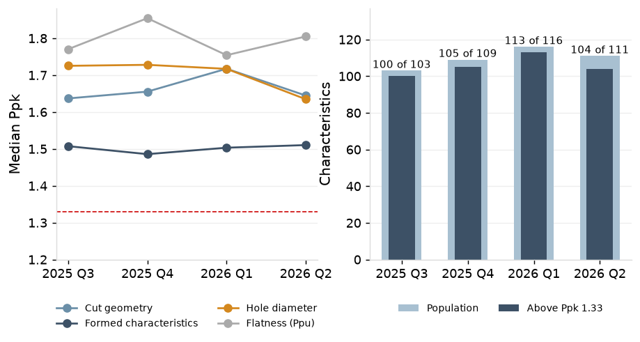
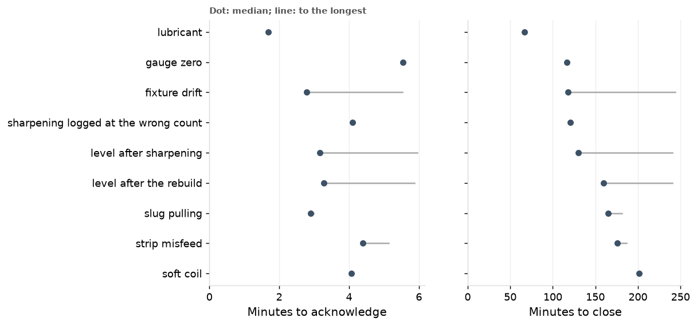
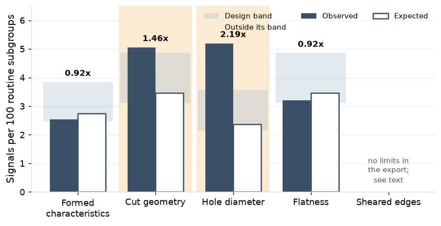
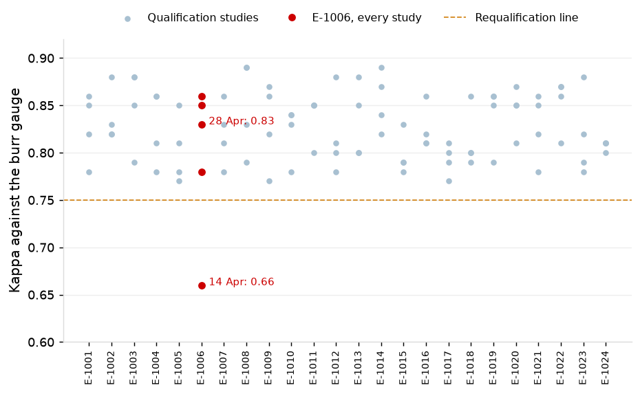
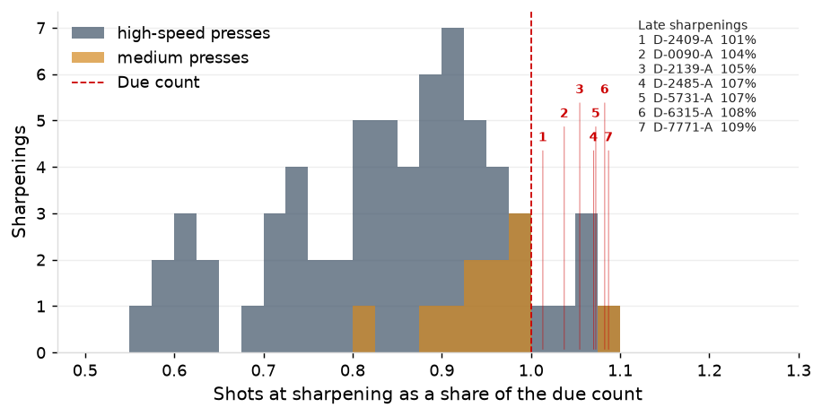
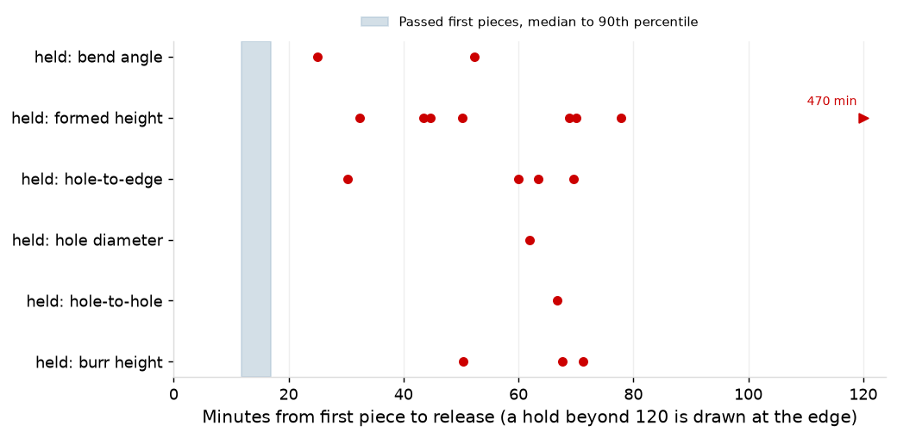
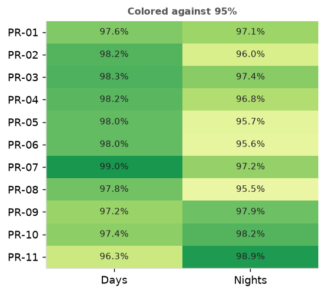

1. Summary
The quarter ran in control: 93 of 100 critical characteristics held above Ppk 1.33, signals ran at 1.23 times the expected rate with the excess on rules 3 and 4, every special cause was traced and closed by 30 June, no chart took limits from a gauge out of service, and 19 of 583 run starts were held at the first piece.
2. Capability Review
Capability held through the quarter on all but seven critical characteristics, and none of those carries a special cause.
2.1 Where capability stands
93 of 100 critical characteristics ran above Ppk 1.33; the seven below are six formed characteristics and one hole diameter. The 11 flatness characteristics, reported on Ppu, all ran above it.

2.2 What the chart design explains
Cpk sits close to Ppk on cut geometry and flatness, 0.09 above on formed characteristics and 0.38 above on hole diameters: the coil offset left after centering and the wear over the sharpening interval, which the three-way and regression charts carry by design.

2.3 Across the year
Capability held across the year, with formed characteristics steady at 1.49 to 1.51, but hole diameters eased from 1.73 to 1.63 in the review quarter, and the count below 1.33 rose to 7, from 3 to 4 in the earlier quarters.

2.4 Characteristics below 1.33
None of the seven carries a special cause; each falls short on the variation its chart is built to carry. Three go to the customer, those whose interval lies wholly below 1.33 or whose Cpk is also below it: C-15731-06, C-37007-06 and C-16315-06.

2.5 Attribute features
Burr and pin fails ran flat within chance across the year: burr at 1,346 per million pieces checked this quarter against 1,160 to 1,203 before it, and pins at 845 against 734 to 1,062.

2.6 By press
No press sits apart; PR-11's one characteristic in the population, C-37007-06, is below 1.33.
3. SPC Review
The charts traced every special cause in the quarter; signals with no assignable cause ran 23% above the design rate, the excess on rules 3 and 4.
3.1 Special causes
The charts traced 18 special causes on the characteristic charts and 112 per-stroke stops with a finding, all closed by 30 June: nine times a die came back from sharpening or rebuild at a new level, a drifting fixture, a soft coil, a sharpening logged at the wrong count, two strip misfeeds, two slug pulls, a gauge zero and a lubricant fault.

The fixture drift on P-14026 is the quarter's one cause traced to a fixture. D-4026-A was rebuilt on 16 May and first ran on 28 May; its charts raised 30 signals coded fixture drift on 28 and 29 May, while F-14026's daily verifications on both days passed. P-14026 did not run again until 18 June. The fixture's verification failed on 2 June, its restudy read 16.7%, and it was rebuilt, restudied at 5.3% on 17 June and back in service on 18 June. The 30 signals' closures give the action as the fixture's removal on the failed verification, an event four days after they were closed.
Signals with a special cause were acknowledged in a median 3.1 minutes and closed in a median 130 minutes; the longest, fixture drift, in 244.

3.2 What the charts flagged
In the quarter the routine charts raised 3,385 signals: 16 were the first signal of a special-cause event, 400 followed on from an event already found, and 2,969 had no assignable cause. The coil-change chart raised 10, and the per-stroke charts stopped the presses 139 times, 112 on a finding. The 671 signals on coil-change and first-piece subgroups of the routine charts are not shown in the figure.

3.3 Signals against expectation
On charts with no special cause, signals ran at 1.23 times the expected rate, broadly across the plant; the excess is on rules 3 and 4 on the regression and X-bar and R charts, as in the control chart design study. Cut geometry ran at 1.46 and hole diameter at 2.19, formed characteristics at 0.92 and flatness at 0.92.

PR-04, PR-11 and PR-03 ran furthest above expectation, at 1.67, 1.48 and 1.41 times, and PR-08 and PR-10 below it, at 0.71 and 0.79.

The quarter's signals by rule follow the year's pattern in the control chart design study: the causes were found mostly on rules 1 and 2.
3.4 Per-stroke tonnage
The per-stroke charts stopped the presses 139 times on 23.2 million strokes, 112 on a finding: 68 slug pulling, 23 chipped punches and 21 worn punches. PR-03 carried 18 of the 27 stops with nothing found.

Stops with nothing found ran at 1.16 per million strokes: the EWMA stopped 24 times against about 9 expected by design, and the channel-share charts 3 times against about 12. 15 of PR-03's 18 came on R26-01066, the first run after the D-4026-A rebuild, and two runs carry 29 of PR-03's 41 for the year. All 44 punch replacements followed a chart: 23 on the channel-share chart and 21 on the EWMA.
3.5 Limits
No chart is past its recalculation trigger at 30 June; 53 new limit sets were issued and 13 of 369 verifications failed. Two baselines are stale: C-23264-03 has been in baseline for 211 days with 21 of 25 subgroups, and C-34479-05 for 103 days with 38 subgroups but three of its ten coil changes. C-34479-05 still runs on its X-bar and R limits from April 2024, although it moved to a three-way chart on 9 March 2026.

3.6 Measurement systems
9 subgroups, on two gauges, were recorded while the gauge was away, all on runs begun before the removal, and none signaled; no chart took limits from a gauge out of service.
The record dates a gauge's return without a time, so 252 subgroups on return days cannot be placed before or after it. No gauge was past calibration due at any quarter end, and 66 gauge studies were run in the quarter. Of the 221 gauges on variable charts, the 180 check fixtures have %GRR under 10% on 164 and 10% to 30% on 16; the 29 calipers and 12 indicators are all under 10%.
Of the 52 fixture studies in the quarter, 44 read under 10%, within 2.8 points of the fixture's previous study; the figure shows the other eight.

All 24 burr check operators are qualified at 30 June, at kappa 0.78 to 0.89; E-1006 fell to 0.66 on 14 April and was requalified on 28 April at 0.83, with no burr check recorded between.

3.7 Dies, first piece and recording
69 of 76 sharpenings were at or before the due count, and burr reached at most 90.8% of its limit; the seven late ones overran by 1% to 9%, each with a reason in the log.

19 of 583 run starts were held at the first piece, released in a median 62 minutes against 12 for a passed first piece; formed heights held 8, among them the PR-09 hold on 9 June after the die repair of 8 June.

Planned checks were recorded on 97.9% of day-shift occasions and 96.9% on nights; nights ran lower on 8 presses, and higher on PR-09 to PR-11.

Appendix
Definitions
Periods. The quarter is 1 April to 30 June 2026; the record is 1 July 2025 to 30 June 2026, exported 13 July 2026. High-speed presses are PR-01 to PR-04; medium presses PR-05 to PR-11.
Signals. A signal is a point beyond a control limit or a run-rule pattern on one panel of a chart. A special cause is a specific, identifiable source of variation found behind a signal; a die back from sharpening or rebuild at a new level is one special cause however many runs it signals on, and every other cause is one per run. The first signal of a special cause is the earliest signal of that event; the signals after it are follow-on signals. A signal with no assignable cause is one where the investigation finds nothing.
Expected rate. For each characteristic chart, at its own rules and the size of the baseline its limits came from, the chance that a routine subgroup carries at least one signal on any of its panels, with the estimation error of the baseline allowed for; summed over the chart's routine subgroups under limits in force, outside any interval with a special cause, and set against the subgroups observed to carry at least one signal. The per-stroke charts' design rate is the EWMA's in-control run length with its parameters estimated from the run's baseline strokes, and each channel-share chart's rate at its limit, summed over each press's charts and strokes.
Capability. The population is the critical characteristics with 60 routine subgroups or more in the period, reported on Ppk, and every flatness characteristic, reported on Ppu. Ppk is on the overall sigma of all readings; Cpk is on the short-term sigma of each chart type: between and within subgroups on three-way charts, the residual about the wear line on regression charts, pooled within subgroups on X-bar and R charts. Intervals are 95%, by Bissell's approximation. The variance shares behind each characteristic are those of the control chart design study, with tool wear fitted first.
Gauges. A gauge's removal and return are dated without a time; a subgroup recorded on either day cannot be placed before or after it.
| Press | Signals | With a special cause | Run starts | First-piece holds | Strokes | Per-stroke stops | Nothing found | Planned checks | Recorded |
|---|---|---|---|---|---|---|---|---|---|
| PR-01 | 424 | 86 | 55 | 1 | 3,753,968 | 17 | 0 | 1,286 | 97.4% |
| PR-02 | 487 | 90 | 70 | 4 | 3,319,548 | 17 | 1 | 1,258 | 97.0% |
| PR-03 | 832 | 54 | 37 | 0 | 4,756,381 | 32 | 18 | 1,622 | 97.8% |
| PR-04 | 687 | 144 | 58 | 1 | 3,440,799 | 12 | 1 | 1,271 | 97.5% |
| PR-05 | 175 | 1 | 60 | 3 | 1,099,116 | 7 | 2 | 583 | 96.9% |
| PR-06 | 456 | 38 | 39 | 1 | 1,778,869 | 8 | 1 | 867 | 96.9% |
| PR-07 | 175 | 1 | 53 | 1 | 998,890 | 4 | 0 | 551 | 98.2% |
| PR-08 | 109 | 2 | 53 | 4 | 898,623 | 6 | 1 | 583 | 96.7% |
| PR-09 | 356 | 0 | 53 | 1 | 1,388,289 | 9 | 1 | 840 | 97.5% |
| PR-10 | 142 | 1 | 58 | 2 | 905,830 | 15 | 0 | 585 | 97.8% |
| PR-11 | 223 | 1 | 47 | 1 | 859,039 | 11 | 2 | 571 | 97.5% |
| Class | Characteristics | Ppk, median | Ppk, interquartile range | Cpk, median | Cpk less Ppk | Below 1.33 |
|---|---|---|---|---|---|---|
| Cut geometry | 24 | 1.64 | 1.56 to 1.70 | 1.66 | -0.00 | 0 |
| Formed characteristics | 60 | 1.51 | 1.41 to 1.59 | 1.58 | 0.09 | 6 |
| Hole diameter | 16 | 1.63 | 1.53 to 1.81 | 2.10 | 0.38 | 1 |
| Flatness (Ppu) | 11 | 1.81 | 1.75 to 1.86 | 1.80 | -0.00 | 0 |
| Characteristic | Part | Press | Chart | Baseline started | Days | Subgroups so far | Coil changes so far |
|---|---|---|---|---|---|---|---|
| C-23264-03 | P-23264 | PR-08 | X-bar and R | 1 December 2025 | 211 | 21 | 4 |
| C-34479-05 | P-34479 | PR-10 | three-way | 19 March 2026 | 103 | 38 | 3 |
| C-17862-03 | P-17862 | PR-04 | X-bar and R | 2 June 2026 | 28 | 9 | 1 |
| C-16291-03 | P-16291 | PR-01 | X-bar and R | 9 June 2026 | 21 | 3 | 0 |
| C-37771-02 | P-37771 | PR-09 | X-bar and R | 9 June 2026 | 21 | 23 | 1 |
| C-16291-08 | P-16291 | PR-01 | X-bar and R | 9 June 2026 | 21 | 3 | 0 |
| C-37771-08 | P-37771 | PR-09 | X-bar and R | 9 June 2026 | 21 | 23 | 1 |
| C-37771-03 | P-37771 | PR-09 | X-bar and R | 9 June 2026 | 21 | 23 | 1 |
| C-12803-05 | P-12803 | PR-04 | X-bar and R | 16 June 2026 | 14 | 12 | 1 |
| C-12803-04 | P-12803 | PR-04 | X-bar and R | 16 June 2026 | 14 | 12 | 1 |
| C-12803-07 | P-12803 | PR-04 | X-bar and R | 16 June 2026 | 14 | 12 | 1 |
| C-18431-08 | P-18431 | PR-04 | X-bar and R | 18 June 2026 | 12 | 4 | 0 |
| C-18431-05 | P-18431 | PR-04 | X-bar and R | 18 June 2026 | 12 | 4 | 0 |
| C-14026-06 | P-14026 | PR-03 | three-way | 30 June 2026 | 0 | 15 | 0 |
| C-14026-05 | P-14026 | PR-03 | three-way | 30 June 2026 | 0 | 15 | 0 |
| C-14026-08 | P-14026 | PR-03 | three-way | 30 June 2026 | 0 | 15 | 0 |
The quarter's signal log. Every one of the quarter's 4,066 signals with its chart, rule, outcome and cause is in the signal log (CSV).